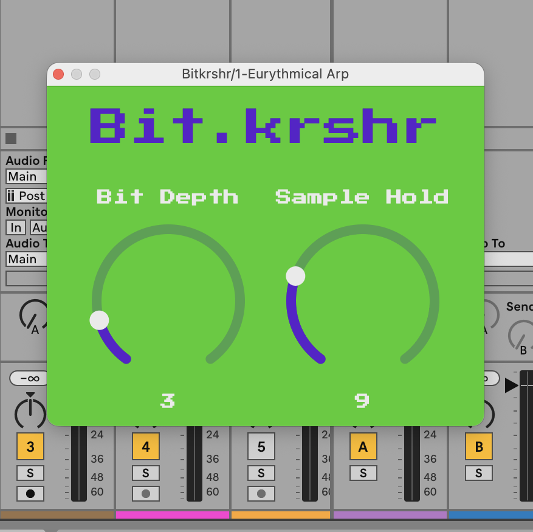

Bit.krshr as Plugin
plugin version of the Bit.krshr effect pedal
ready to use as VST3 in DAWs, intitislly tested on Ableton Live on MacOS
as a regular DAW and plugin user, i always dreamt about writing my
own plugin.
for this goal i wanted to convert my Bit.krshr Effect Pedal in a
basic plugin, so that i can deepen my basic knowledge in C++ and get to
know JUCE Framework
builts for Windows made with jumake by BaraMGB
Plugin in Action on a DAW
Note that the video can get loud!
What I learned
C++
- Member initializer list: how a constructor sets up the base class and member variables (like
apvts) before the constructor body runs. override: how to replace a base-class method with my own version, and how the compiler helps me catch typos.- Inheritance basics: my plug-in class extends
juce::AudioProcessor, so I fill in the blanks of a ready-made template. - References and pointers: why
AudioBuffer<float>&changes the original audio.
JUCE
- Processor and GUI are separate: the processor handles the audio and lives as long as the plug-in, while the editor is only a window that can open and close.
- Important methods:
prepareToPlay(),processBlock(),releaseResources(),createEditor()and saving/loading the plug-in state. - Important classes:
AudioProcessor,AudioBuffer,AudioProcessorValueTreeState(APVTS) and theAudioParametertypes. - Parameters: how APVTS and attachments connect knobs to parameters safely.
- Custom GUI: colors, a custom
LookAndFeeland an embedded pixel font (usingBinaryData).
Audio and DSP
- Real-time audio:
processBlock()runs on a separate audio thread, so it must stay fast and avoid things like memory allocation. - From Arduino to plug-in: I rebuilt my Arduino bit crusher (bit reduction and sample-and-hold) as a plug-in, and learned how audio works as floating-point numbers between -1.0 and 1.0.
Workflow
- Building a VST3 with Xcode and jumake, and testing it in Ableton Live.
Download
You can download the plugin --SOON-- from here:
Windows VST3
MacOS VST3
unzip and extract the data you download, copy the VST3 file to your DAW's default plugin folder and do not forget to scan!